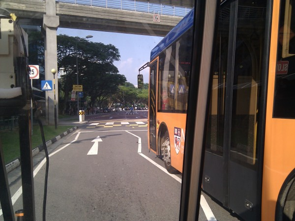
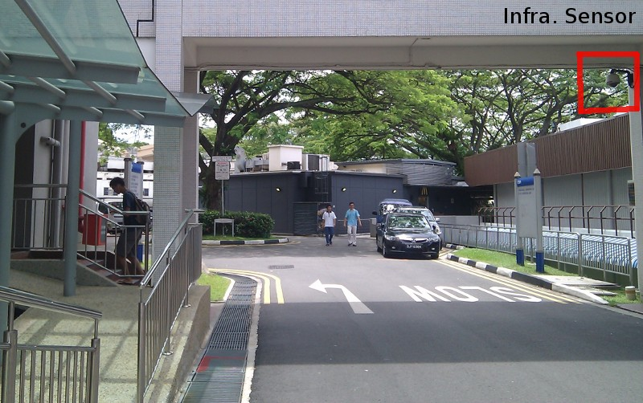
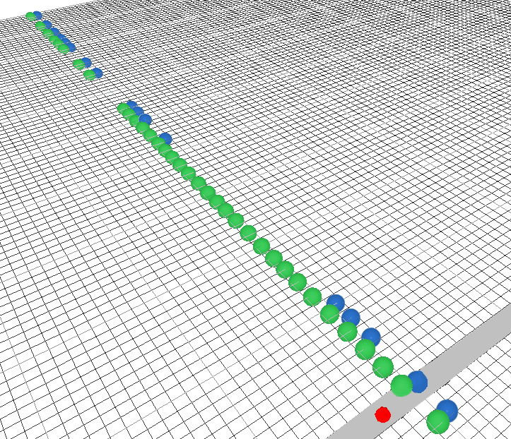

Autonomy for Mobility on Demand Systems
Utilizing infrastructure sensors
|  |  |
| Onboard sensing can be severly limited due to occlusions by other vehicles. |
Occlusion due to environmental structures can limit the sensing ability of onboard sensors. |
On-board sensors are often limited in environmental perception since they only provide local information. In an urban environment we live in a world which is being increasingly instrumented with sensors and controllers : traffic/security cameras, traffic lights, embedded loop detectors networked into the transportation infrastructure to name just a few. The natural progression for autonomous vehicles is to tap into these existing sensors in order to complement its environmental perception using onboard sensing. The popularity and feasibility of this approach becomes ever near with increasing V2V and V2I guidelines and new vehicles coming with such instrumentation.
|  | |
| Simulation results shows the improvement in traffic flow with input about incoming pedestrians (in red) from infrastructure sensors (blue vehicles) over those navigating only using onboard sensing (green vehicles). |
With the help of the infrastructure sensing, the autonomous vehicle responds to incoming pedestrians (inset) even before they are visible from on-board sensors. |
We are interested on decision making under such sensing for our autonomous vehicles. We show in our experiments that such information can be used in real time into the vehicle control strategies. Using simulation we show the improvement in the efficiency of traffic flow and also demonstrate such behaviors in a real system during our operational runs in the NUS campus.
Relevant Publications
-
B. Rebsamen, T. Bandyopadhyay, T. Wongpiromsarn, S. Kim, Z. J. Chong, B. Qin, M. H. Ang Jr., E. Frazzoli and D. Rus. Utilizing the Infrastructure to Assist Autonomous Vehicles in a Mobility on Demand Context. In IEEE TENCON, 2012 (to appear).
[PDF] - Z. J. Chong, B. Qin, T. Bandyopadhyay, T. Wongpiromsarn, E. S. Rankin, M. H. Ang Jr., E. Frazzoli. D. Rus, D.Hsu and K. H. Low, Autonomous Personal Vehicle for the First- and Last-Mile Transportation Services. IEEE International Conference on Robotics, Automation and Mechatronics, RAM-2011.